Непрерывная интеграция и Непрерывная сборка и выкладка (CI — Continuous integration, CD — Continuous delivery and deploy) — это подход к разработке комплексных пользовательских решений с использованием цикла Разработка > Тестирование > Эксплуатация (Develop > Test > Production).
С таким способом разработки решение проходит три этапа: создаётся, тестируется, передаётся в эксплуатацию. Для выполнения каждого этапа предназначается отдельная компания. Она регистрируется в своём окружении:
- dev-компания — для стадии разработки;
- test-компания — для тестирования разработанного решения;
- prod-компания — для эксплуатации конечными пользователями.
Решение переходит на следующий этап с помощью экспорта в компанию в другом окружении.
Подход CI/CD позволяет разрабатывать пользовательские решения короткими итерациями, поддерживать их версионность и целостность и работать с ними параллельно в трёх окружениях.
В ELMA365 для реализации подхода CI/CD предусмотрено несколько инструментов, которые можно использовать независимо друг от друга:
- утилита elma365pm — вспомогательная независимая утилита командной строки применяется совместно со сторонними сервисами контроля версий и настройки пайплайнов, например, GitLab. Утилита позволяет экспортировать в файл компонент конфигурации компании (раздел, модуль или решение). Затем работа осуществляется в стороннем сервисе, что позволяет использовать операции из High-code разработки. Компонент обновляется до новой версии, упаковывается в файл и импортируется в другую компанию. Подробнее читайте в статье «Утилита elma365pm для CI/CD в решениях»;
- инструмент Непрерывная выкладка (Low-code CI / CD) — универсальный инструмент обмена компонентами между компаниями из разных окружений. Работа выполняется в интерфейсе ELMA365 на основе стандартных процессов экспорта и импорта. Компании связываются между собой. Затем настраивается операция обмена: выбираются компоненты конфигурации, указывается тип операции и т. д. Профиль обмена сохраняется, что позволяет выполнять операцию несколько раз. Присутствует возможность сравнить конфигурации двух компаний и проанализировать результат выполнения операции. Процесс обмена выполняется в фоновом режиме.
Подробную информацию о подходе к разработке CI/CD, а также рекомендации по его осуществлению вы можете найти в ELMA365 Community.
В этой статье рассмотрим подробнее настройку инструмента Непрерывная выкладка (Low-code CI / CD) и работу с ним.
Терминология
В статье используются следующие термины:
- Компания — зарегистрированная и лицензированная платформа ELMA365 в одном из вариантов поставки: SaaS, On-Premises;
- Окружение (среда) — компания, которая регистрируется отдельно для определённого этапа работы с решением: разработки, тестирования, эксплуатации (dev, test, prod). Для регистрации и лицензирования компаний в dev и test окружениях обратитесь к вашему менеджеру ELMA365;
- Конфигурация — структура, включающая в себя: установленные и пользовательские решения, разделы, модули и их содержимое, бизнес-процессы, группы, виджеты, шаблоны документов и другие сущности, созданные на уровне компании, организационную структуру и номенклатуру дел;
- Текущая конфигурация — компания, в которой настраивается связь и операция обмена;
- Внешняя конфигурация — компания, с которой производится обмен компонентами конфигурации;
- Привязка — связь, созданная между двумя компаниями для обмена компонентами текущей и внешней конфигураций. Связанные компании могут быть зарегистрированы в одинаковом или разных окружениях;
- Профиль обмена — операция, которая определяет процесс экспорта или импорта между связанными компаниями. В профиле указываются компоненты для обмена, которые могут включать разделы, модули, решения или всю конфигурацию. Позволяет сравнивать текущую и внешнюю конфигурации и просматривать результаты обмена. Профиль может использоваться многократно для проведения операций обмена.
Настройка непрерывной выкладки (Low-code CI / CD)
Страница Непрерывная выкладка (Low-code CI / CD) доступна администраторам системы в разделе Администрирование > Инструменты разработчика.
Страница включает в себя три вкладки: Привязки, Профили, Уведомления. На них настройка и работа с непрерывной выкладкой производится следующим образом:
- Устанавливается связь между двумя компаниями для осуществления обмена текущей или внешней конфигурацией.
- Создаётся профиль обмена, в котором указывается выполняемая операция — экспорт или импорт, выбираются объекты обмена и задаются условия решения возможных конфликтов.
- Осуществляется сравнение двух конфигураций и их компонентов, выбранных в профиле обмена. Выявляются различия и анализируется результат выполнения операции обмена.
- Выполняется проверка созданного профиля, с помощью которой выявляются возможные ошибки процесса обмена.
- Запускается операция обмена по заданному профилю.
- Опционально настраивается канал для уведомлений о неуспешно выполненных операций обмена.
Установить связь между двумя компаниями
Для реализации непрерывной интеграции (CI) и непрерывной сборки и выкладки (CD) в ELMA365 настраивается обмен компонентами между двумя компаниями в разных окружениях. Для этого текущая компания связывается с внешней компанией при помощи создания привязки.
Рекомендуется связать компании в разных окружениях следующими парами: разработка/тестирование (dev/test), тестирование/эксплуатация (test/prod).
В каждой паре первая компания (например, dev) является текущей конфигурацией, в которой создаётся привязка. Вторая компания (например, test) выступает в качестве внешней конфигурации, с которой выполняется обмен. Это позволит последовательно перемещать версии решений между компаниями, из dev-окружения в test, а затем из test-компании в prod.
В текущей компании можно создать неограниченное количество привязок с различными компаниями, зарегистрированными в любом окружении.
Регистрация и лицензирование компаний в dev и test окружениях осуществляется через менеджера ELMA365.
начало внимание
В ELMA365 SaaS можно установить только одну связь с внешней компанией и настроить одну операцию обмена между ними.
В поставке On-Premises нет ограничений по количеству добавляемых привязок и профилей.
конец внимание
Чтобы привязать одну компанию к другой, выполните следующие действия:
- Перейдите в ELMA365, которую необходимо привязать, например, в test-компанию. Откройте раздел Администрирование > Токены и создайте токен для связи.
- Откройте ELMA365, где нужно создать связь, например, dev-компанию для разработки. Перейдите в раздел Администрирование > Инструменты разработчика и выберите страницу Непрерывная выкладка (Low-code CI / CD).
- На вкладке Привязки нажмите + Создать и в открывшемся окне заполните поля:
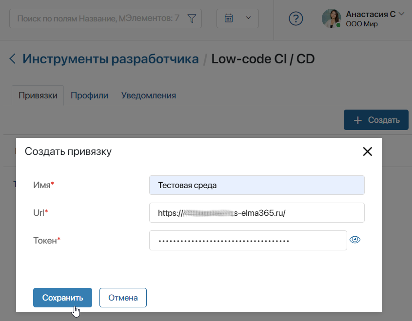
- Имя* — задайте название привязки, которое будет отображаться в списке, например, Тестовая среда;
- Url* — укажите URL-адрес главной страницы внешней компании;
- Токен* — скопируйте токен, созданный во внешней компании на шаге 1, и вставьте его в поле.
- Сохраните настройки.
Все привязанные внешние компании отображаются на вкладке Привязки. С каждой из них возможен обмен конфигурациями или их компонентами. Чтобы изменить данные привязки, нажмите на запись в списке.
Если для привязки не добавлены профили обмена, вы можете отредактировать её данные или удалить связь с внешней компанией. Для этого нажмите на название привязки в списке и выполните действие в её карточке. Если вы увидели предупреждение о существующих операциях обмена, удалите их на вкладке Профили и повторите действие.
Создать профиль обмена
После привязки внешней конфигурации к компании, вы можете осуществлять обмен компонентами. Для этого создаётся профиль обмена.
В профиле указывается, с какой внешней конфигурацией выполняется обмен и определяется тип операции (экспорт или импорт данных). Затем отмечаются объекты для обмена — выбрать можно все объекты, входящие в конфигурацию, или её отдельные компоненты. Также в профиле задаётся стратегия разрешения конфликтов в процессе обмена.
В ELMA365 SaaS можно настроить только одну операцию обмена. В поставке On-Premises отсутствуют ограничения по количеству профилей обмена, например, можно добавить профиль для каждого пользовательского решения, разработанного в dev-компании.
По созданному профилю можно осуществить проверку выполнения обмена, сравнить конфигурации двух компаний, а также запускать операцию множество раз.
Например, в dev-окружении разработаны несколько пользовательских решений. Вы можете экспортировать их в другую компанию для тестирования функциональных возможностей. Для этого в тестовой компании создайте профиль обмена, включите в него все решения из dev-окружения и запустите операцию экспорта. Когда в dev-компании будут разработаны новые версии решений, вы сможете перенести их в тестовое окружение, выполнив тот же профиль обмена.
Чтобы создать профиль обмена:
- Перейдите в раздел Администрирование > Инструменты разработчика > Непрерывная выкладка (Low-code CI / CD) и откройте вкладку Профили.
- В правом верхнем углу страницы нажмите + Создать и заполните детали обмена:
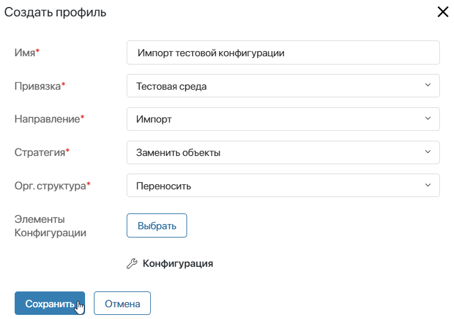
- Имя* — задайте название обмена, которое будет отображаться в списке профилей;
- Привязка* — выберите внешнюю конфигурацию, т. е. привязку, созданную на странице Непрерывная выкладка (Low-code CI / CD) на вкладке Привязки;
- Направление* — укажите операцию для профиля обмена:
- Импорт — компоненты внешней конфигурации загружаются в текущую компанию;
- Экспорт — компоненты текущей конфигурации переносятся в привязанную внешнюю компанию.
- Стратегия* — выберите способ решения конфликтов, возможных при выполнении операции обмена. Конфликты могут возникать, если выявлена несовместимость между компонентами текущей и внешней конфигураций, например, обмен совершается не последовательно между версиями компонентов или переносимые объекты были изменены в обеих компаниях. Если при обмене хотя бы в одном компоненте обнаружен конфликт, операция производится согласно заданной стратегии:
- Заменить объекты — при возникновении конфликтов существующие компоненты целевой конфигурации будут полностью заменены на импортируемые объекты. Такая стратегия обмена может привести к некорректной работе компонентов целевой конфигурации. Например, если в скриптах используются свойства приложения, которые по результатам обмена удалятся, такой скрипт не будет исполняться;
- Сохранить объекты — если при обмене найдены конфликтующие компоненты, сохраняется версия целевой конфигурации, а операция обмена отменяется, т. е. завершается с ошибкой. Например, в контекст одного приложения добавлены различные свойства в тестовой и эксплуатационной конфигурации. При обмене компонентами возникнет конфликт, и импорт будет невозможен.
- Элементы Конфигурации — нажмите Выбрать. В зависимости от указанной операции откроется структура конфигурации: при импорте показывается состав внешней системы, при экспорте — элементы текущей компании. Отметьте флажком компоненты, которые будут перенесены в другую конфигурацию, и нажмите Применить.
- Орг. структура* — если в профиле выбирается обмен конфигурацией целиком, дополнительно укажите необходимость переноса организационной структуры.
Обратите внимание, перенести можно только те компоненты, для которых доступен экспорт. Например, если в эксплуатационной ELMA365 активировано платное бизнес-решение из каталога ELMA365 Store, его нельзя выбрать для экспорта в тестовую среду.
В процессе обмена связанными друг с другом решениями в Low-code CI / CD не нужно создавать зависимости между ними, в отличии от процесса экспорта таких решений в отдельные файлы .e365 и последующего импорта файлов в другую компанию. Если решения работают вместе, они экспортируются в одном профиле обмена. После выполнения операции все связи в объектах сохранятся.
- Сохраните настроенный профиль обмена.
Все созданные профили обмена отображаются на странице Непрерывная выкладка (Low-code CI / CD) на вкладке Профили.
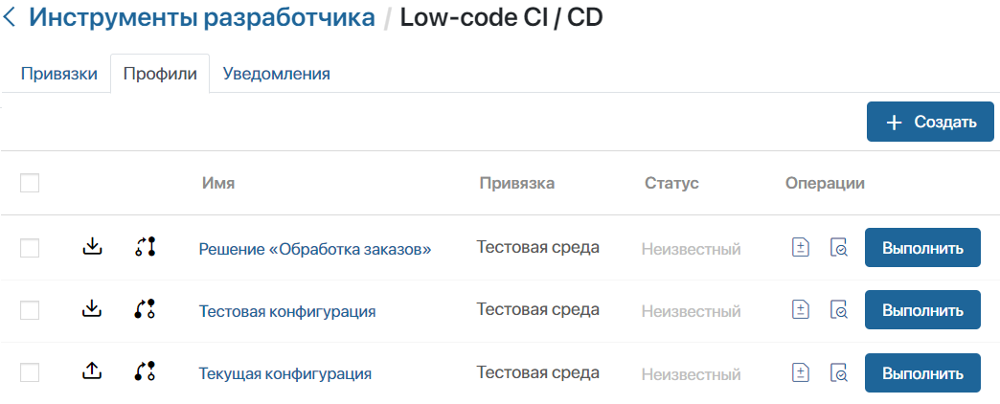
Указанные в профиле направление и стратегия отмечаются в списке значками:
- , 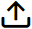 — импорт, экспорт;
- 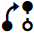, 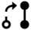 — заменить объекты, сохранить объекты.
Чтобы убрать профиль из списка, поставьте флажок рядом с его названием и нажмите появившуюся в правом верхнем углу страницы кнопку Удалить.
Сравнить компоненты конфигураций из профиля обмена
Перед проверкой и запуском операции обмена вы можете сравнить состояние объектов, выбранных в профиле, для текущей и внешней конфигураций. Входящие изменения будут отображаться со статусами, при помощи которых вы сможете проанализировать результат выполнения обмена.
Для этого на странице Непрерывная выкладка (Low-code CI / CD) откройте вкладку Профили и напротив созданного профиля обмена нажмите значок 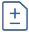.
В открывшемся окне сформируются структуры двух конфигураций со всеми объектами, которые добавлены в выбранный профиль:
- Целевая конфигурация — это структура конфигурации, которая будет изменена при выполнении профиля обмена. Например, при операции импорта целевой будет являться текущая компания, при экспорте — внешняя конфигурация;
- Входящие изменения — это компоненты из той конфигурации, которая будет перенесена в целевую компанию.
Чтобы посмотреть подробную информацию о различиях между конфигурациями, разверните структуру в столбце входящих изменений. В списке перечислены разделы, приложения, страницы, виджеты, скрипты и т. д.
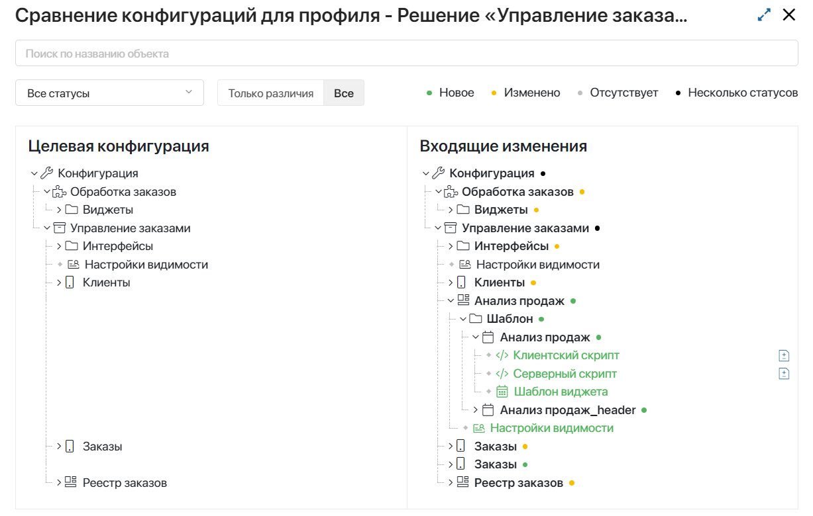
Компоненты отмечаются цветовыми обозначениями, которые соответствуют статусам:
 — созданные компоненты, которые при выполнении обмена добавятся в целевую конфигурацию. Например, в эксплуатационную ELMA365 загрузится новое решение из тестового окружения;
— созданные компоненты, которые при выполнении обмена добавятся в целевую конфигурацию. Например, в эксплуатационную ELMA365 загрузится новое решение из тестового окружения;- — объекты присутствуют в обеих компаниях. Они были отредактированы в компании, с которой совершается обмен, и обновятся в целевой конфигурации. Например, в тестовой среде внесены изменения в настройки форм приложений, отредактированные объекты необходимо перенести в эксплуатационную компанию;
- 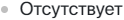 — компоненты присутствуют в целевой конфигурации, но не найдены в структуре входящих изменений. После выполнения обмена объекты целевой конфигурации, отмеченные этим статусом, не изменятся;
- 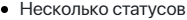 — в отмеченных компонентах найдено несколько различий. Например, в тестовом окружении в решении удалили раздел и добавили новый, а в эксплуатационной компании присутствует предыдущая версия решения.
Чтобы просмотреть изменения в коде входящих скриптов, нажмите на значок рядом с его названием. В открывшемся окне сравнения вы увидите код из текущей и внешней конфигураций. Навигация по изменениям и количество добавленных или удаленных строк отображены на верхней панели. Для полноэкранного режима нажмите значок в правом верхнем углу.
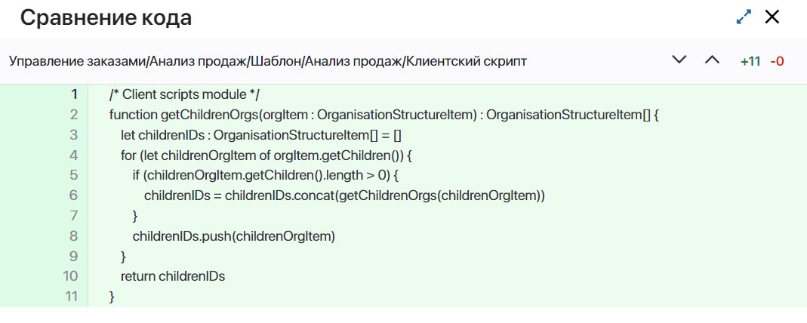
При закрытии окна с кодом вы вернётесь к сравнению конфигураций по выбранному профилю. Здесь предусмотрен поиск по названию компонентов. Результат сравнения можно отфильтровать по определённому статусу, а также отобразить всю структуру или только компоненты, в которых найдены различия.
Проверить выполнение профиля обмена
После создания профиля обмена вы можете проверить выполнение указанной в нём операции. Для этого на странице Непрерывная выкладка (Low-code CI / CD) откройте вкладку Профили. Напротив созданного профиля обмена нажмите значок 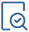 и подтвердите действие.
Запустится проверка на совместимость компонентов текущей и внешней компаний. Процесс аналогичен проверкам, выполняемым при стандартных операциях экспорта и импорта любого компонента системы.
В результате проверки выявляются ошибки, препятствующие выполнению операции. Например, в экспортируемых или импортируемых компонентах могут присутствовать ссылки или зависимости от объектов, которые не включены в профиль обмена.
Подробнее о процессе проверки на примере операции загрузки и выгрузки решения читайте в статьях «Импорт решения из файла .e365» и «Экспорт решения из файла .e365».
Текущее состояние и результат проверки отображается в списке профилей обмена в столбце Статус. Нажав на статус по окончании проверки, вы сможете просмотреть отчёт с её результатом. Если при проверки выявлены ошибки, выполнить профиль обмена будет невозможно.
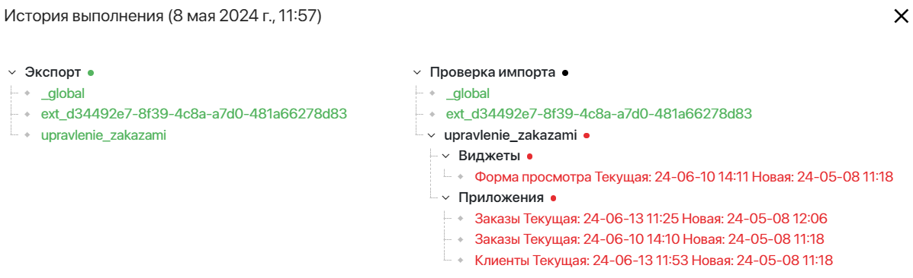
Запустить обмен компонентами
После сравнения конфигураций по профилю вы можете запустить операцию обмена. Для этого на вкладке Профили напротив нужной записи нажмите Выполнить и подтвердите действие. По окончании переноса в списке профилей отобразится статус операции.
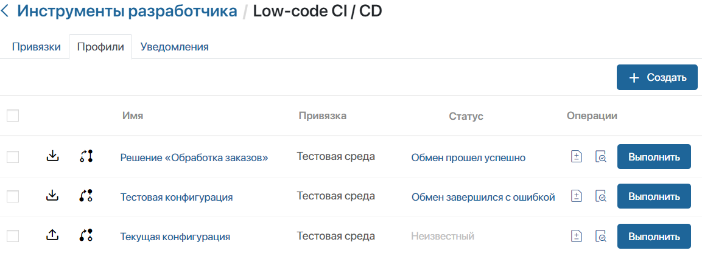
Чтобы посмотреть историю выполнения операции обмена, нажмите на статус профиля в таблице. В открывшемся окне отображаются данные по последнему произведённому обмену. Если обмен завершился с ошибкой, вы можете развернуть список компонентов и посмотреть подробную информацию, как при проверке профиля обмена.
Настроить канал уведомлений
Ошибки, возникшие при выполнении экспорта или импорта компонентов, можно отображать в ленте сообщений в отдельном канале. Чтобы настроить уведомления:
- Перейдите в раздел Сообщения, создайте канал и настройте права доступа для его участников.
- Откройте раздел Администрирование > Инструменты разработчика > Непрерывная выкладка (Low-code CI / CD) и перейдите на вкладку Уведомления.
- В поле Канал для уведомлений выберите созданный канал.

- Для применения настроек нажмите на появившуюся на странице кнопку Сохранить.